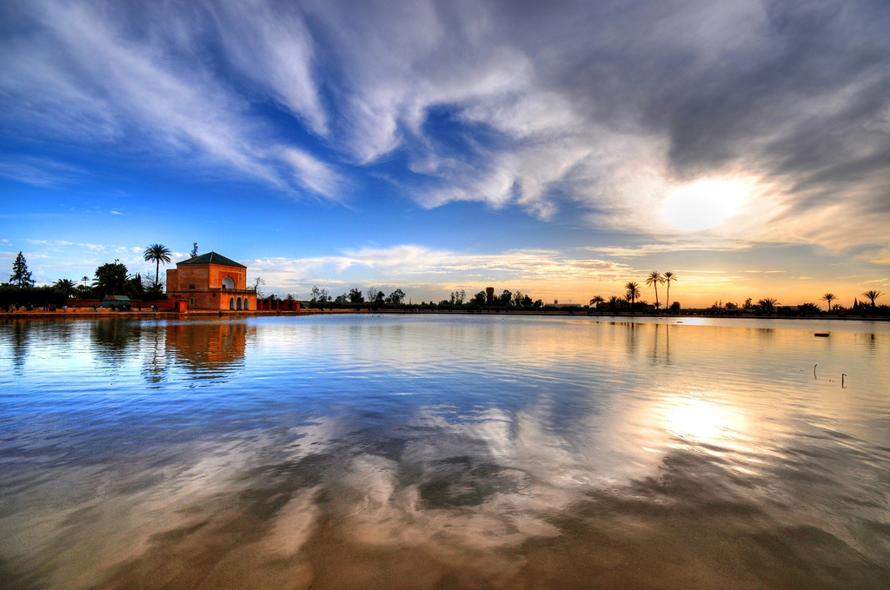
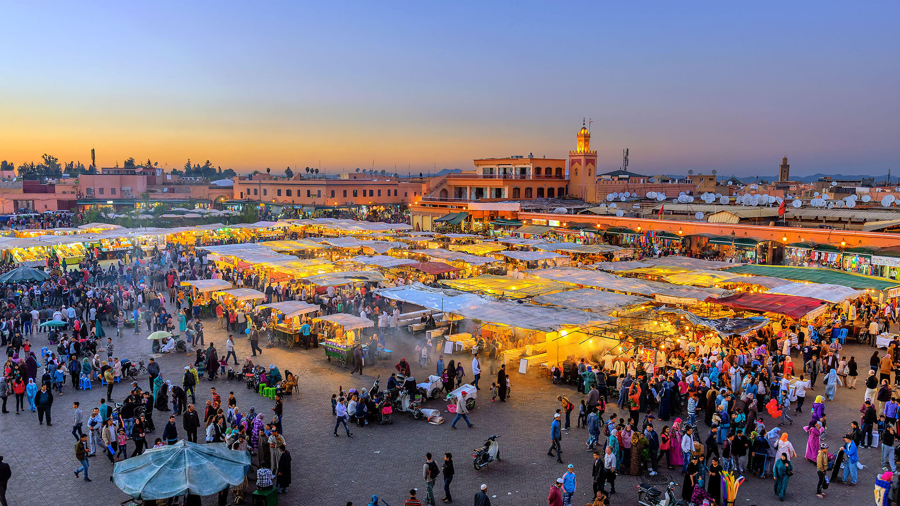

Quelle que soit la façon avec laquelle vous choisirez de vivre Marrakech, vous emporterez certainement un peu de Marrakech en vous, c’est un endroit plein de surprises ! Avec ses innombrables marchés, jardins, palais et mosquées, vous en aurez plein la vue. Marrakech, appelée aussi la ville rouge est la quatrième plus grande ville du Royaume après Casablanca, Fès et Tanger avec 928 850 habitants en , elle demeure la capitale touristique du pays. Plus qu’une cité, Marrakech est une perle polie par l’histoire et le goût de l’accueil, sachant accueillir ses invités à bras ouverts depuis des siècles. La ville est subdivisée en deux parties distinctes : la ville nouvelle (ou moderne) on y trouve de nombreux complexes hôteliers, boutiques de luxe, banques, salons de thé et terrasses de café et la médina ou ville historique (dix kilomètres d'enceinte), il est aisé d’imaginer les caravaniers qui chargeaient leurs dromadaires de denrées, d’outils et d’objets artisanaux. Les souks offrent tout ce que le voyageur attend : couleurs, ambiances, parfums, visages souriants et accueillants. Marrakech célèbre dans le monde entier pour sa palmeraie et son minaret, cette ville est un véritable spectacle vivant où les hommes et le folklore local sont habilement mis en scène dans un décor médiéval. Un patrimoine culturel impressionnant avec de nombreux monuments et des musées de qualité. 
C’est tout simplement Magique ! Son économie repose essentiellement sur le tourisme, le commerce et l'artisanat. L'infrastructure hôtelière a connu ces dernières années une croissance rapide et elle s'oriente désormais vers le tourisme de luxe. Connue aussi par la Place Jemaa El Fna, la ville phare des Almoravides est fondée vers , elle est aussi connue par de grands évènements et festivités comme : Festival des arts populaires de Marrakech, Festival international du film de Marrakech, Arts in Marrakech, Festival Samaa des musiques sacrées, festival de danse contemporaine, Sun festival : festival national des jeunes et de la musique.
Marrakech est en effet devenue une des destinations favorites pour les célébrités qui aiment son charme très bien préservé qui sait allier luxe, raffinement et authenticité. La ville a ainsi été qualifiée de « rêve des milles-et-une nuits » par Arielle Dombasle
. Marrakech devient alors un lieu réputé pour sa culture, ses arts, ses traditions et son patrimoine architectural qui séduit peu à peu un grand nombre d'artistes de renom.

Située au cœur de la Médina, la place De jemaa-el-Fna est à la fois le centre géographique de Marrakech et le lieu de rencontre socioculturel incontournable de la ville. Elle est dominée par le minaret de la mosquée Quessabine, entre le souk et le minaret de Koutoubia. La place De jemaa-el-Fna n'a pas toujours été la place animée et chaleureuse qu'elle est aujourd'hui. En effet, son nom en arabe signifie "assemblée des morts", c'était la place de grève où les criminels étaient exécutés et leurs têtes clouées aux murs et exposées aux regards des passants. C'est par là que vous accéderez aux souks avec ses petites ruelles bordées de petites échoppes variées, d'écrivains publics, de marabouts, de vendeurs de grigris et même d'arracheurs de dents. Autour de la place, vous aurez accès à différents services hors du commun comme des consultations de voyantes ou des recettes de magie. Durant la journée, charmeurs de serpents, tatoueurs à l'henné ou propriétaires de singes qui proposent des photos avec leur animal côtoient jongleurs, musiciens et acrobates. On y organise même des matchs de boxe amateurs. N'hésitez pas à monter sur l'une des nombreuses terrasses bordant la place pour vous isoler quelques instants de cette vie grouillante, pour y déguster des cornes de gazelle accompagnées d'un thé à la menthe. L'une des meilleures heures pour admirer la place depuis ces corniches est vraiment au moment où le soleil commence à se coucher, et où les échoppes activent leurs fourneaux pour préparer le repas du soir. La fumée enivrante, les tamtams, et les lueurs des loupiotes qui éclairent les guérites se prêtent très bien à la photo rituelle. La nuit, la place désertée par les saltimbanques est envahie par des restaurants ambulants qui proposent de délicieux plats marocains typiques pour des sommes très modiques. En soirée, vous pourrez déguster des repas traditionnels et sans prétentions à des prix défiant toute concurrence. Cette place représente à elle seule l’ambiance, la diversité et la culture de Marrakech.
Le jardin Majorelle est un jardin botanique touristique d'environ 300 espèces sur près d'1 hectare, une villa Art déco labellisée Maisons des Illustres depuis , et un musée de l'Histoire des Berbères, à Marrakech au Maroc. Le jardin est baptisé du nom de son fondateur, l'artiste peintre français Jacques Majorelle (-), qui l'a créé en , en s'inspirant des oasis, jardin islamique et jardin espagnol-hispano-mauresque. Acheté par Yves Saint Laurent et Pierre Bergé en , il appartient à ce jour à la Fondation Pierre Bergé – Yves Saint Laurent, et est un des hauts lieux du tourisme au Maroc avec près de 600 000 visiteurs annuels. Il fait partie de la fondation Jardin -Majorelle, qui comprend également le musée Yves Saint Laurent de Marrakech, inauguré en .
La Ménara est un vaste jardin planté d'oliviers aménagé sous la dynastie des Almoahades à environ 45 minutes à pied de la place Jemaa el-Fna, au centre de Marrakech, au Maroc. Au cœur de ce jardin, un grand bassin au pied d'un pavillon sert de réservoir d'eau pour irriguer les cultures. C'est un endroit très paisible, à l'écart du tumulte de la ville. C'est donc un lieu privilégié pour les promenades. Le bassin est alimenté en eau grâce à un système hydraulique vieux de plus de 700 ans, qui achemine l'eau depuis les montagnes situées à 30 km environ de la ville de Marrakech. Ce bassin permet l'irrigation de l'oliveraie.
Le palais de la Bahia est un ancien palais du XIXe siècle de huit hectares de style mauresque / islamique, à Marrakech au Maroc. Actuel musée, il est un des chefs-d'œuvre de l'architecture marocaine et de l'art islamique, un des monuments majeurs du patrimoine culturel du pays, et un des principaux lieux de tourisme au Maroc
La mosquée Koutoubia est un édifice religieux construit en XIIe siècle à Marrakech au Maroc. Son architecture et son décor ascétique reflètent l'art des Almohades. La mosquée Koutoubia, ou mosquée des libraires, fut débutée sous la dynastie berbère des Almoravides en , mais fut profondément remaniée à partir de sous le calife Almohade Abu Yusuf Yaqub al-Mansur, et devint l'un des édifices les plus caractéristiques de ce style. Son nom vient du fait qu'elle se situait dans le souk des marchands de manuscrits.
Pour un séjour à Marrakech inoubliable, il convient de s’informer sur la météo locale avant de programmer le voyage. Dans cette destination qui fait rêver des milliers de touristes chaque année, les contrastes climatiques sont très importants selon les saisons.En ce qui concerne l'été, la Ville Rouge n’a pas besoin d’un accès à la mer pour séduire ! Si vous choisissez de passer un week-end à Marrakech en été, vous profiterez d’un climat sec. Toutefois, les températures peuvent être torrides, surtout entre juillet et août. Le thermomètre peut alors grimper jusqu’à 40°C. Le début et la fin de la période estivale sont plus cléments, avec une température moyenne de 28°C. Ceux qui achètent un billet d’avion pour Marrakech en hiver auront le privilège de vivre l’expérience d’un séjour au ski au Maroc. La ville présente en effet l’avantage de se situer à environ 70 km de la station de sports d’hiver d’Oukaïmeden, dans le Moyen Atlas. À plus de 3000 mètres d’altitude, la station jouit d’un enneigement optimal entre novembre et avril. Un hiver à Marrakech est aussi synonyme d’humidité. C’est d’ailleurs la saison la plus pluvieuse de la cité. Ce n’est alors pas la meilleure période pour visiter la ville au cours d’un voyage pas cher à Marrakech. Le soir, il faut particulièrement froid et la température peut chuter en dessous de 10°C. La plupart des voyageurs préfèrent réserver leur vol pour Marrakech en automne. Cette saison jouit en effet de températures plutôt agréables, avec une moyenne de 25°C. Cependant, il convient toujours de s’informer de la météo, car le Herrûrco est parfois responsable d’orages dans la région. Ce vent humide apparaît généralement entre octobre et novembre. Néanmoins, si la météo est de votre côté pendant le séjour, faites-vous plaisir en visitant La Médina, classée au patrimoine mondial de l’UNESCO. Profitez de l’animation permanente de la célèbre place Jamâa El Fna et déambulez au milieu des souks et des échoppes qui vendent des pacotilles et des trésors artisanaux, comme les tapis et les poteries. Le printemps est certainement la meilleure période pour réserver un hôtel à Marrakech. Soleil, températures agréables … Toutes les conditions sont réunies pour découvrir sereinement tous les charmes de la cité. Chacun y trouvera son bonheur ! Les sportifs pourront s’adonner au golf, à l’équitation ou encore s’offrir un baptême de l’air en montgolfière. En quête de détente ? Laissez-vous envoûter par l’atmosphère particulière des jardins de Majorelle ou encore la Ménara où il est agréable de se promener en calèche. Et pour la suite c'est par ici.
| Mois | Janvier | Fevrier | Mars | Avril | Mai | Juin | Juillet | Aout | Septembre | Octobre | Novembre | Decembre |
|---|---|---|---|---|---|---|---|---|---|---|---|---|
| Température minimale moyenne (°C) | 5.9 | 7.6 | 9.4 | 11 | 13.8 | 16.3 | 19.9 | 20.1 | 18.2 | 14.7 | 10.4 | 6.5 |
| Température moyenne (°C) | 7.4 | 12.2 | 13.8 | 15.8 | 17.3 | 20.6 | 23.8 | 28.3 | 28.3 | 21.1 | 16.3 | 12.6 |
| Température maximale maximale (°C) | 18.4 | 19.9 | 22.3 | 23.7 | 27.5 | 31.3 | 36.8 | 36.5 | 32.5 | 27.5 | 22.2 | 18.7 |